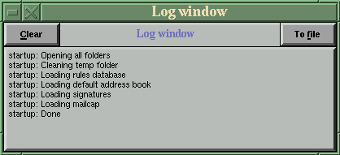

![[ TABLE OF CONTENTS ]](../gx/indexnew.gif)
![[ FRONT PAGE ]](../gx/homenew.gif)


There are several full-featured text-mode mail clients available for Linux, and these programs (such as Pine and Elm) are probably the most commonly used mailers in the Linux/unix world. One reason for this tendency is that they run equally well in both console and X sessions (in an xterm). They also have a longer development history than their X-windows counterparts which results in the accretion of more features and options. There has been ample time for the developers to deal with bugs as well.
Many of the X-windows mailers I've tried have either been too basic, too beta, or awkward to use. I've always returned to Pine, my standby. Recently two X-based mailers have been released (in late beta versions), both of which are stable and well-provided with features and options. When I say stable I mean that they have functioned well for me, I haven't lost any mail, and they both have been through several releases in which the most egregious bugs seem to have been ironed out.
Mail programs are a rather personal sort of software. I've found it to be prudent to copy any existing mailbox files or directories to a safe location before installing any new mail client. You never know until you try just what a new mailer will do with your existing mail messages the first time it is run. As an example, mbox-style mail "folders" (which are just single files with messages concatenated) might be willy-nilly transformed into MH-style directories, with each message becoming an individual numbered file. I suppose there may exist a technique to reverse this metamorphosis, but I don't know what it might be, aside from manually using an editor.
Paul Raines has been working
on a Tcl/Tk mail client for some time now. I'll let him describe its
origin:
I began the project at the beginning of '92 while a physics
grad student at the Univ. of Penn. I had been put in charge
of several SGI workstations and was disappointed in the X
window mail readers I had found. I had recently got into
Tcl/Tk programming and played around with putting Tk
interfaces on top of command line programs for physics
simulation. I figured it would be easy to do one to sit on
top of the mailx command and did. That produced tkmail 1.x.
Eventually I decided I was too limited by the mailx command
and wrote a Perl backend to serve as an extensible
equivalent. That produced tkmail 2.x. Perl was used because
its text processing features were much faster than Tcl but I
wanted to keep the whole program as scripts for portability.
This proved a lost cause as Perl proved as hard to port as C
code. For my update to work with Tk4.0, I decided to drop
Perl in favor of writing my own C code as a module extension
to Tcl. The past year was the last of my graduate career and
mostly devoted to finishing my thesis leaving little time
for work on tkmail. It is sort of behind in some of the
features out there today (MIME, POP, IMAP, etc) but I hope
to rectify that soon.
The most important future plans are:
* better MIME support
* better key binding customization
* an "auto-filing" feature
* better search support TkMail is very customizable; Paul Raines includes with the distribution an alternate Tk text-manipulation library which allows the use of emacs-style key-bindings in the compose window. This library can be used with other Tk programs as well. Colors and fonts can be independently selected for the folder-view and compose window. Much of the configuration can be done from menu-selections.
Here is a screenshot of the main folder-view window:
And here is one of the composition window:
TkMail, like many other Linux mailers, in effect acts as a front-end to sendmail. Luckily most recent Linux distributions come with sendmail preconfigured. If your inbox is on a POP server you will need to use popclient, fetchmail, or fetchpop to retrieve your messages and leave them in a mailbox file on your local disk, where mail clients can find them.
Among the many features of this beta release are:
TkMail is set up initially to open a small debugging window from which the main program can be started. Once it becomes evident that the program is working to your satisfaction this can be disabled by editing the main tkmail4 script and changing the line set mfp(debug) 1 to set mfp(debug) 0, or just start it with the -nodebug option.
I have found TkMail 4.0b8 to be easy to learn and use, and its interface is nice-looking. With a little more work on the MIME abilities it will be as effective an X mail client as any available.
Paul Raines maintains a home page for TkMail; the source for the 4.0b8 version is available here.
Some months ago John Fisk wrote about the XFmail program in the Gazette. His account inspired me to try it out, but I had quite a few problems with the message editing window, so much so that when I tried to mail the developers a comment on their program, the message was corrupted and I doubt that it was legible to them. I gave up and deleted it soon after, making a mental note to check it out later when perhaps it had become more usable.
Recently I did just that, and found that a new editing module had been contributed which really makes a difference in usage of the mailer. No longer is there a limit to the amount of the text in the editing window. This change, I believe, makes XFMail a credible choice as a Linux mail client.
XFMail requires the XForms library. This is available from the XForms web-site, which will always have the latest version and news. If you obtain the archive be aware that the package includes a GUI designer as well as many samples. All you need to keep if you're not a programmer is the XForms shared and static libraries (libforms.so.81 and libforms.a) and the header file (forms.h). These three files will enable you to compile XForms applications, such as XFMail from source.
In order to try the current beta (which I recommend) you'll need to obtain the source archive from the XFMail home FTP site. As long as you have the XForms library files installed it should compile for you, notwithstanding the warning message at the FTP site. If your current mailbox is in the common mailx format (a single file), you might want to copy the file (INBOX or whatever) to another location before installing XFMail. The default behaviour is for XFMail to transform your messages into the multiple-file MH format; after installation you can disable this and move your mailbox back. If you already store your mail in the MH manner the program will load your messages without moving them.
Even though XFMail reads and stores messages in MH format, it doesn't require that you have the MH system installed.
This mail client can handle all mail fetching and delivery needs for a single-user machine. The user is given the option of using sendmail for delivery (either on- or off-line), or using XFMail to directly contact the SMPT server and deliver outgoing mail. Fetching new mail can be done externally,(popclient et al), or via XFMail directly. These features could be helpful for new users who would rather not deal with sendmail; all functions can be handled by the mailer.
XFMail has the recognizable XForms look, familiar to users of the Lyx front-end program for TeX/Latex. The XForms library gives programs a unique look, unlike standard X or Motif. The user interface is perhaps not quite as fancy as some, but it's not hard to become accustomed to it. There are some limitations in choice of colors; the selection available is greater than that of console-ANSI programs, but less than the amount available to standard X clients.
Here are some screenshots of the various XFMail windows:
And here is the logging window:

Among the other features of this mailer are an internal address book, full MIME support, and support for faces and picons. Support is planned for compatibility with mailx-style mail-folders.
XFMail is quite an ambitious programming project; if you do try out the beta version I'm sure the authors would appreciate hearing any comments you may have. There also exists an XFMail mailing list; send a message to: majordomo@Burka.NetVision.net.il with "subscribe xfmail" in the message body.
Visit the XFMail homepage for the latest news; by the time you read this, beta 0.5 may well have been released.
XFMail is being developed by Gennady B. Sorokopud and Ugen J.S. Antsilevich.